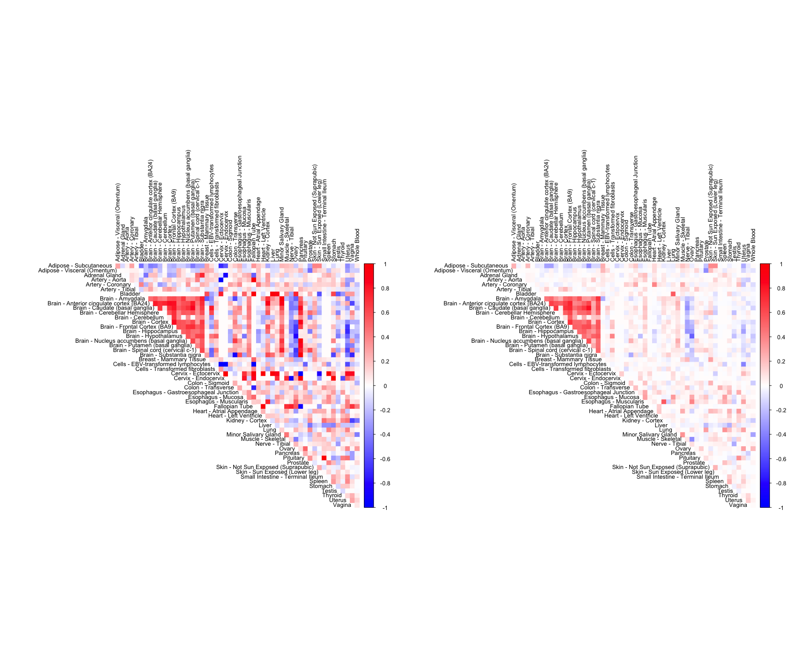
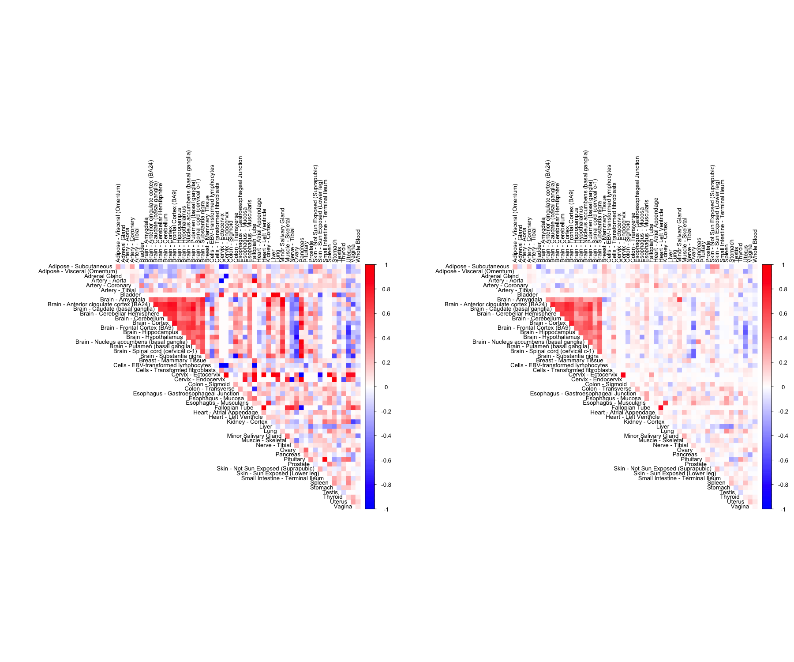
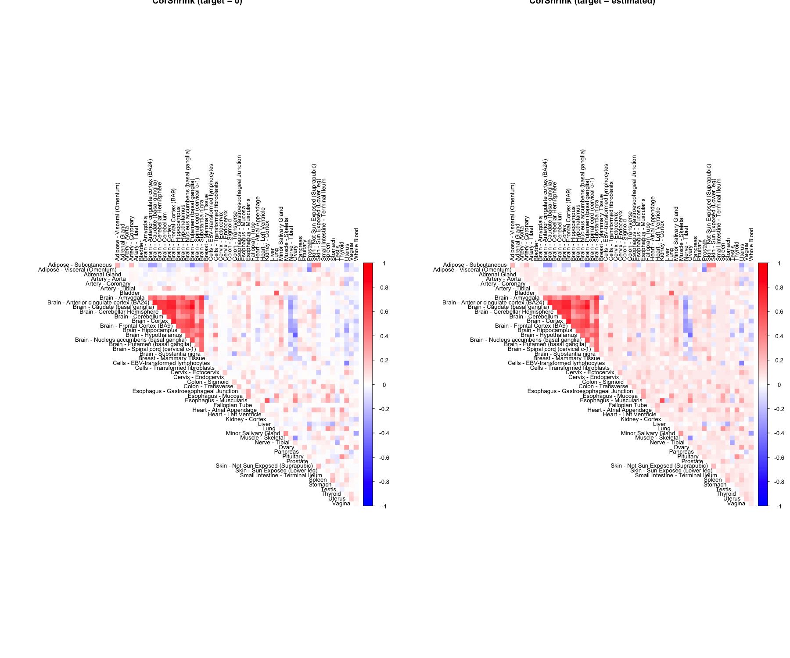
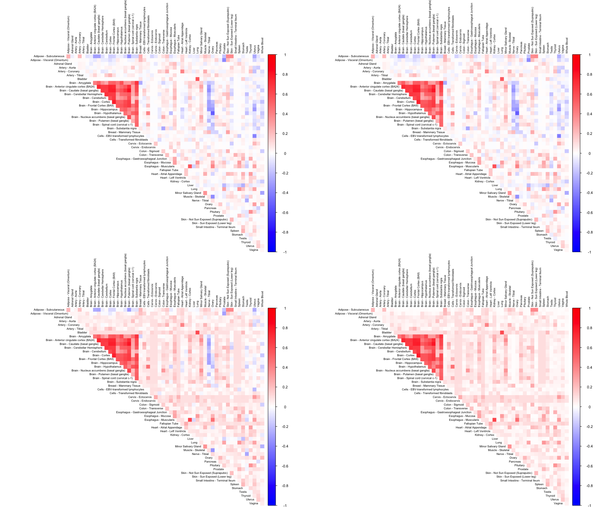

Estimation of covariance or correlation matrices has widespread usage in a broad spectrum of statistical applications. The most commonly used estimator, namely the sample covariance or correlation matrix, is rank deficient and hence unstable in cases where the dimensionality of the problem (p) is greater than the number of samples (n). This problem has driven statisticians to suggest various alternative estimators in settings. Several estimators of correlation matrix have been proposed in such settings and their theoretical properties and performance comparisons have been studied comprehensively [@touloumis2015nonparametric, @ledoit2003improved, @bickel2008, @rothman2009]. Some of these methods are already available as R packages - corpcor [@schafer2004empirical], glasso [@friedman2008sparse], PDSCE [@rothman2009] etc.
These approaches, however, are not well suited for handling large scale missingness in data. Also, some of these methods work well under some specific sets of assumptions about the underlying matrix, for e.g. - thresholding estimators assume a banded structure of the correlation matrix. In this package, ee introduce a method CorShrink that adapts to varying degree of missingness in observations corresponding to each pair of features. Also, CorShrink can be applied directly to data consisting of missing values, as well as to derived quantities like vectors and matrices of correlations between features, and allows for two formulations - an asymptotic approach and a resampling based approach. Even in examples with no missing data, CorShrink estimated correlations are visibly closer to the true correlations compared to the standard methods. CorShrink also can be applied to other correlation-like quantities such as partial correlations, rank correlations and cosine similarity values from word2vec models.
CorShrink is a companion package to ashr R package [@stephens2016false]. Before installing CorShrink, please make sure you have the latest version of ashr.
devtools::install_github("stephens999/ashr")The other dependencies of this package include SQUAREM, reshape2 and Matrix. Next we install CorShrink.
install.packages("CorShrink")The development version can be installed from Github as well.
library(devtools)
install_github("kkdey/CorShrink")Then load the package with:
library(CorShrink)The main steps in CorShrink are as follows
\[ Z_{ij} = 0.5 \log \left (\frac{1 + R_{ij}}{1 - R_{ij}} \right ) \]
Estimate from data, the standard errors (\(s_{ij}\)) of these Z-scores \(Z_{ij}\). This can be done in two ways in CorShrink. One approach uses an asymptotic normal approximation, where the standard errors are \(s_{ij} = \frac{1}{n_{ij} - 3}\), with \(n_{ij}\) being the number of complete observations between pair \((i,j)\) that generates the correlation \(R_{ij}\). The other approach performs a re-sampling of the observations for the \((i,j)\) pair and obtains a Bootstrap estimate of the standard errors from the re-sampled \(Z_{ij}\).
Apply adaptive shrinkage (ash due [@stephens2016false]) on the pairs \((Z_{ij}, s_{ij})\) either across all \(i\) and \(j\) pairs (matrix format) or along all \(i\) for one \(j\), or along all \(j\) for one \(i\) (vector formats).
\[ Z^{\star}_{ij} : = ash \; (Z_{ij}, s_{ij}) \]
The matrix format shrinkage is performed by the CorShrinkMatrix function while the vector format shrinkage is performed by the CorShrinkVector function.
\[ R^{\star}_{ij} = \frac{exp \; (2 Z^{\star}_{ij}) - 1}{exp \; (2 Z^{\star}_{ij}) + 1} \]
We load an example data matrix - the person (544) by tissue samples (53) gene expression data for the gene ENSG00000166819 collected from the Genotype Tissue Expression (GTEx) Project .
data("sample_by_feature_data")Just by checking the first few rows and columns, we see that the data contains many missing values. The data is
sample_by_feature_data[1:5,1:5]## Adipose - Subcutaneous Adipose - Visceral (Omentum)
## GTEX-111CU 10.472332 10.84006
## GTEX-111FC 7.335392 NA
## GTEX-111VG 9.118889 NA
## GTEX-111YS 10.806459 11.26113
## GTEX-1122O 11.040446 11.71497
## Adrenal Gland Artery - Aorta Artery - Coronary
## GTEX-111CU 2.721234 NA NA
## GTEX-111FC NA NA NA
## GTEX-111VG NA NA NA
## GTEX-111YS 3.454823 1.162059 NA
## GTEX-1122O 1.522667 1.674467 4.188002We estimate the adaptively shrunk correlation matrix for this data using CorShrink.
out <- CorShrinkData(sample_by_feature_data, sd_boot = FALSE, image = "both",
image.control = list(tl.cex = 0.8))The function outputs a list with two elements which are two versions of CorShrink estimated matrices - cor and cor_before_PD.cor is the nearest positive definite approximation (\(R^{{\star}{\star}}\)) to cor_before_PD version (\(R^{{\star}}\)) as described in the methods above. When image = "both", the function plots the images for both these versions.
To see whether the method works well, check if the these two versions are close to each other.
out$cor_before_PD[1:5,1:5]## Adipose - Subcutaneous
## Adipose - Subcutaneous 1.00000000
## Adipose - Visceral (Omentum) 0.24167719
## Adrenal Gland -0.04364913
## Artery - Aorta 0.01307030
## Artery - Coronary 0.21743134
## Adipose - Visceral (Omentum) Adrenal Gland
## Adipose - Subcutaneous 0.241677186 -0.043649133
## Adipose - Visceral (Omentum) 1.000000000 0.002099297
## Adrenal Gland 0.002099297 1.000000000
## Artery - Aorta 0.004398573 -0.001082796
## Artery - Coronary 0.012282042 0.038295685
## Artery - Aorta Artery - Coronary
## Adipose - Subcutaneous 0.013070305 0.21743134
## Adipose - Visceral (Omentum) 0.004398573 0.01228204
## Adrenal Gland -0.001082796 0.03829568
## Artery - Aorta 1.000000000 0.03868019
## Artery - Coronary 0.038680191 1.00000000out$cor[1:5, 1:5]## Adipose - Subcutaneous
## Adipose - Subcutaneous 1.00000000
## Adipose - Visceral (Omentum) 0.24112346
## Adrenal Gland -0.04174961
## Artery - Aorta 0.01346126
## Artery - Coronary 0.21567603
## Adipose - Visceral (Omentum) Adrenal Gland
## Adipose - Subcutaneous 0.239767447 -0.04149049
## Adipose - Visceral (Omentum) 1.000000000 0.00169961
## Adrenal Gland 0.001700607 1.00000000
## Artery - Aorta 0.003230271 -0.00079904
## Artery - Coronary 0.013433817 0.03748903
## Artery - Aorta Artery - Coronary
## Adipose - Subcutaneous 0.0133903272 0.21453361
## Adipose - Visceral (Omentum) 0.0032314217 0.01343823
## Adrenal Gland -0.0007997934 0.03752334
## Artery - Aorta 1.0000000000 0.03828987
## Artery - Coronary 0.0382909260 1.00000000CorShrink takes as input not just the samples by features data matrix but also a matrix of pairwise correlations with a matrix of number of samples for each pair contributing to the correlation.
data("pairwise_corr_matrix")
data("common_samples")
out <- CorShrinkMatrix(pairwise_corr_matrix, common_samples, image = "both",
image.control = list(tl.cex = 0.8))
CorShrink can be applied to vectors of correlations as well.
cor_vec <- c(-0.56, -0.4, 0.02, 0.2, 0.9, 0.8, 0.3, 0.1, 0.4)
nsamp_vec <- c(10, 20, 30, 4, 50, 60, 20, 10, 3)
out <- CorShrinkVector(corvec = cor_vec, nsamp_vec = nsamp_vec)
out## [1] -0.1008065570 -0.0593108888 0.0006072387 0.0127953383 0.8944339076
## [6] 0.7935595323 0.0236537504 0.0051443096 0.0250218532Note that the correlations computed from adequate amount of data as for the 5th and 6th entries above, the amount of shrinkage is minimal, while it is substantial for the 4th and 9th entries which correspond to small number of samples.
We have so far looked at CorShrinkData, CorShrinkMatrix and CorShrinkVector, three functions that provide adaptive shrinkage of correlations at the level of the data matrix, matrix of correlations and vector of correlations respectively. In the above examples, we have used the asymptotic version of our algorithm (see Methods). Next we show example usage of a resampling based version of CorShrink.
out <- CorShrinkData(sample_by_feature_data, sd_boot = TRUE, image = "both",
image.control = list(tl.cex = 0.8))## Finished Bootstrap : 1
## Finished Bootstrap : 2
## Finished Bootstrap : 3
## Finished Bootstrap : 4
## Finished Bootstrap : 5
## Finished Bootstrap : 6
## Finished Bootstrap : 7
## Finished Bootstrap : 8
## Finished Bootstrap : 9
## Finished Bootstrap : 10
## Finished Bootstrap : 11
## Finished Bootstrap : 12
## Finished Bootstrap : 13
## Finished Bootstrap : 14
## Finished Bootstrap : 15
## Finished Bootstrap : 16
## Finished Bootstrap : 17
## Finished Bootstrap : 18
## Finished Bootstrap : 19
## Finished Bootstrap : 20
## Finished Bootstrap : 21
## Finished Bootstrap : 22
## Finished Bootstrap : 23
## Finished Bootstrap : 24
## Finished Bootstrap : 25
## Finished Bootstrap : 26
## Finished Bootstrap : 27
## Finished Bootstrap : 28
## Finished Bootstrap : 29
## Finished Bootstrap : 30
## Finished Bootstrap : 31
## Finished Bootstrap : 32
## Finished Bootstrap : 33
## Finished Bootstrap : 34
## Finished Bootstrap : 35
## Finished Bootstrap : 36
## Finished Bootstrap : 37
## Finished Bootstrap : 38
## Finished Bootstrap : 39
## Finished Bootstrap : 40
## Finished Bootstrap : 41
## Finished Bootstrap : 42
## Finished Bootstrap : 43
## Finished Bootstrap : 44
## Finished Bootstrap : 45
## Finished Bootstrap : 46
## Finished Bootstrap : 47
## Finished Bootstrap : 48
## Finished Bootstrap : 49
## Finished Bootstrap : 50
The algorithm works by first computing a Bootstrap estimate of the standard error of the Fisher z-scores for each pair and then using this estimate together with the correlations to shrink the latter.
The breakdown can be formulated at the level of a correlation matrix as follows.
zscoreSDmat <- bootcorSE_calc(sample_by_feature_data, verbose = FALSE)
out <- CorShrinkMatrix(pairwise_corr_matrix, zscore_sd = zscoreSDmat, image = "both",
image.control = list(tl.cex = 0.8))So far, in all our examples, we assumed that the estimated correlations between any pair of variables is shrunk towards 0. But CorShrink allows the user to choose a non-zero shrinkage target, estimated from the data, using the mode option in ash.control input.
One can choose a fixed non-zero target in mode as well.
par(mfrow=c(1,2))
out1 <- CorShrinkData(sample_by_feature_data, sd_boot = FALSE, image = "corshrink", image.control = list(title = "CorShrink (target = 0)", tl.cex = 0.8))
out2 <- CorShrinkData(sample_by_feature_data, sd_boot = FALSE, image = "corshrink", ash.control = list(mode = "estimate"),
image.control = list(title = "CorShrink (target = estimated)", tl.cex = 0.8))
The image = "output" option just outputs the image for the shrunk matrix without plotting it.
In general, CorShrink assumes a normal prior for the population Fisher z-scores. But under specific settings, a non-symmetric distribution , such as uniform or half-uniform could be a better fit. This can be achieved using the mixcompdist in ash.control.
par(mfrow=c(2,2))
out1 <- CorShrinkData(sample_by_feature_data,sd_boot = FALSE, image ="corshrink",
ash.control = list(mixcompdist = "normal"),
image.control = list(tl.cex = 0.6))
out2 <- CorShrinkData(sample_by_feature_data,sd_boot = FALSE, image ="corshrink",
ash.control = list(mixcompdist = "uniform"),
image.control = list(tl.cex = 0.6))
out3 <- CorShrinkData(sample_by_feature_data,sd_boot = FALSE, image ="corshrink",
ash.control = list(mixcompdist = "halfuniform"),
image.control = list(tl.cex = 0.6))
out4 <- CorShrinkData(sample_by_feature_data,sd_boot = FALSE, image ="corshrink",
ash.control = list(mixcompdist = "+uniform"),
image.control = list(tl.cex = 0.6))
We would like to thank the GTEx Consortium, John Blischak, Sarah Urbut, Chiaowen Joyce Hsiao, Peter Carbonetto and all members of the Stephens Lab.
sessionInfo()## R version 3.5.0 (2018-04-23)
## Platform: x86_64-apple-darwin15.6.0 (64-bit)
## Running under: macOS Sierra 10.12.6
##
## Matrix products: default
## BLAS: /Library/Frameworks/R.framework/Versions/3.5/Resources/lib/libRblas.0.dylib
## LAPACK: /Library/Frameworks/R.framework/Versions/3.5/Resources/lib/libRlapack.dylib
##
## locale:
## [1] en_US.UTF-8/en_US.UTF-8/en_US.UTF-8/C/en_US.UTF-8/en_US.UTF-8
##
## attached base packages:
## [1] stats graphics grDevices utils datasets methods base
##
## other attached packages:
## [1] CorShrink_0.1-3 knitr_1.20
##
## loaded via a namespace (and not attached):
## [1] Rcpp_0.12.17 magrittr_1.5 MASS_7.3-49
## [4] doParallel_1.0.11 pscl_1.5.2 SQUAREM_2017.10-1
## [7] lattice_0.20-35 foreach_1.4.4 plyr_1.8.4
## [10] ashr_2.2-7 stringr_1.3.1 tools_3.5.0
## [13] corrplot_0.84 parallel_3.5.0 grid_3.5.0
## [16] gtable_0.2.0 corpcor_1.6.9 htmltools_0.3.6
## [19] iterators_1.0.9 yaml_2.1.19 rprojroot_1.3-2
## [22] digest_0.6.15 Matrix_1.2-14 gridExtra_2.3
## [25] reshape2_1.4.3 codetools_0.2-15 evaluate_0.10.1
## [28] rmarkdown_1.9 stringi_1.2.2 compiler_3.5.0
## [31] backports_1.1.2 truncnorm_1.0-8This R Markdown site was created with workflowr